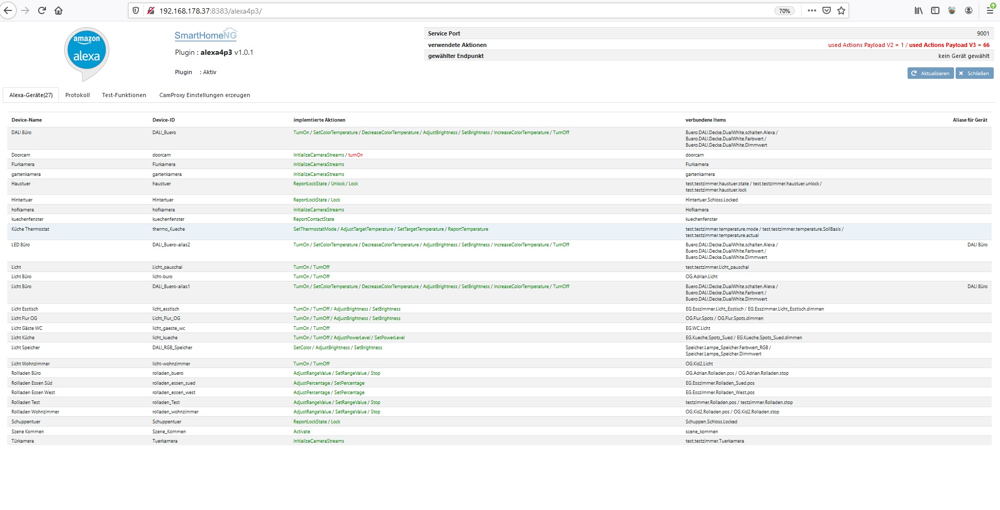
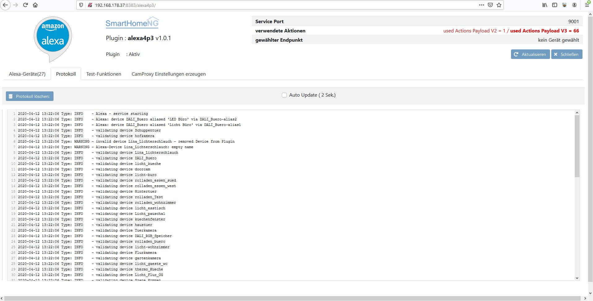
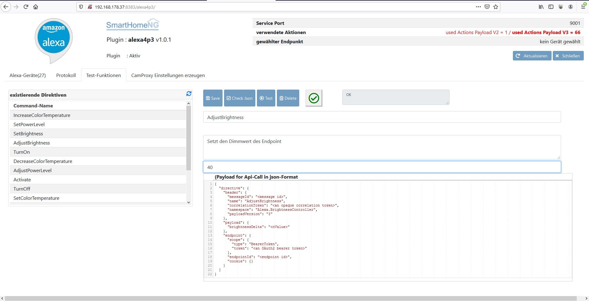
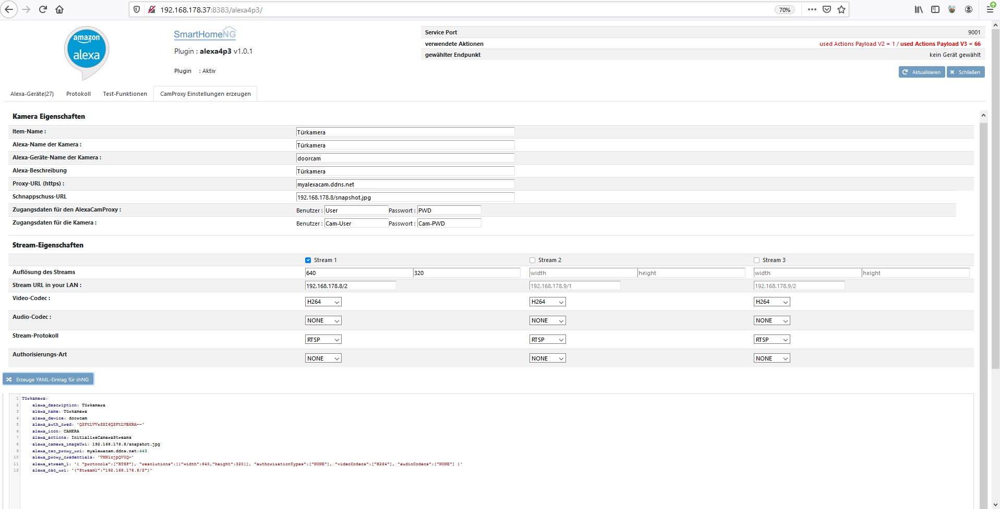

alexa4p3
Alexa4PayloadV3
Table of Content
Beispiel-Konfigurationen Neu
————————————–
Generell
Die Daten des Plugin müssen in den Ordner /usr/local/smarthome/plugins/alexa4p3/ (wie gewohnt) Die Rechte entsprechend setzen.
Das Plugin sollte ohne Änderungen die ursprünglichen Funktionen von Payload V2 weiterverarbeiten können.
Um die neuen Payload-Features nutzen zu können muss lediglich die Skill-Version in der Amazon Hölle auf PayLoad Version 3 umgestellt werden. Alles andere kann unverändert weiterverwendet werden.
Das Plugin muss in der plugin.yaml eingefügt werden :
Alexa4P3:
plugin_name: Alexa4P3
service_port: 9000
Das ursprünglich Plugin kann deaktiviertwerden :
#alexa:
# plugin_name: alexa4p3
# service_port: 9000
Idealerweise kopiert man sich seine ganzen conf/yaml Files aus dem Items-Verzeichnis. und ersetzt dann die „alten“ Actions durch die „Neuen“. Nachdem der Skill auf Payload V3 umgestellt wurde muss ein Discover durchgeführt werden. Im besten Fall funktioniert dann alles wie gewohnt.
In den Items sind die „neuen“ V3 Actions zu definieren :
Zum Beispiel :
PayloadV2 : turnon
PayloadV3 : TurnOn
Die Actions unterscheiden sich zwischen Payload V2 und V3 oft nur durch Gross/Klein-Schreibung
Change Log
20.10.2020
Doku von Schuma für die Einrichtung des Skills bei Amazon ergänzt - eingefügt bei Requirements
11.04.2020
Version auf 1.0.2 für shNG Release 1.7 erhöht
12.03.2020
Ergänzung bei Wertänderung durch das Plugin wid der „Plugin Identifier“ „alexa4p3“ an die Change Item-Methode übegeben (PR #332)
07.12.2019
Web-Interface um Protokoll-Log ergänzt
PlaybackController realisiert
bux-fix for alias-Devices, es wurden nicht alle Eigenschaften an das Alias-Device übergeben. Voice-Steuerung funktionierte, Darstellung in der App war nicht korrekt.
06.12.2019 - zum Nikolaus :-)
RangeController mit global „utterances“ für Rolladen realisiert - endlich „Alexa, mach den Rolladen zu/auf - hoch/runter“
01.12.2019
Web-Interface ergänzt
Prüfung auf Verwendung von gemischtem Payload V2/V3 im Web-Interface
Bug-Fix bei falsch definierten Devices (alexa_name fehlt) - Issue #300 - diese werden entfernt und ein Log-Eintrag erfolgt
Bug-Fix alexa-description (PR #292) - die Beschreibung in der App lautet nun „device.name“ + „by smarthomeNG“
alexa_description beim Geräte Discovery ergänzt
20.04.2019
Authentifizierungsdaten (Credentials) für AlexaCamProxy eingebaut
Umbennung des Plugin-Pfades auf „alexa4p3“ !! Hier die Einträge in der plugin.yaml anpassen.
17.02.2019
Version erhöht aktuell 1.0.1
CameraStreamController Integration für Beta-Tests fertiggestellt
26.01.2019
ColorController eingebaut
Doku für ColorController erstellt
Neues Attribut für CameraStreamController (alexa_csc_proxy_uri) zum streamen von Kameras in lokalen Netzwerken in Verbindung mit CamProxy4AlexaP3
19.01.2019
Version auf 1.0.0.2 erhöht
ContactSensor Interface eingebaut
Doku für ContactSensor Interface ergänzt
DoorLockController fertiggestellt
DoorLockController Doku ergänzt
ReportLockState eingebaut
Doku für die Erstellung des Alexa-Skill´s auf Amazon als PDF erstellt
31.12.2018
Version auf 1.0.0.1 erhöht
CameraStreamController eingebaut
Dokumentation für CameraStreamController ergänzt
PowerLevelController eingebaut
Dokumentation für PowerLevelController ergänzt
Debugs und Testfunktionen kontrolliert und für Upload entfernt
24.12.2018
Doku für PercentageController erstellt
Bug Fix für fehlerhafte Testfunktionen aus der Lambda
12.12.2018
Scene Controller eingebaut
Doku für Scene Controller erstellt
PercentageController eingebaut
Requrirements
Das Plugin benötigt Modul Python-Requests. Dies sollte mit dem Core immer auf dem aktuellen Stand mitkommen.
Amazon Skill / Lambda
Es muss ein funktionierender Skill in der Amazon Developer Konsole / AWS Lambda erstellt werden. Eine ausführliche Dokumentation unter ./assets/Alexa_V3_plugin.pdf zu finden. Vielen Dank @schuma für die ausführliche Dokumentation
Ansonsten keine Requirements.
Icons / Catagories
Optional kann im Item angegeben werden welches Icon in der Alexa-App verwendet werden soll :
alexa_icon = "LIGHT"
| Value | Description |
|---|---|
| ACTIVITY_TRIGGER | A combination of devices set to a specific state. Use activity triggers for scenes when the state changes must occur in a specific order. For example, for a scene named "watch Netflix" you might power on the TV first, and then set the input to HDMI1. |
| CAMERA | A media device with video or photo functionality. |
| COMPUTER | A non-mobile computer, such as a desktop computer. |
| CONTACT_SENSOR | An endpoint that detects and reports changes in contact between two surfaces. |
| DOOR | A door. |
| DOORBELL | A doorbell. |
| EXTERIOR_BLIND | A window covering on the outside of a structure. |
| FAN | A fan. |
| GAME_CONSOLE | A game console, such as Microsoft Xbox or Nintendo Switch |
| GARAGE_DOOR | A garage door. Garage doors must implement the ModeController interface to open and close the door. |
| INTERIOR_BLIND | A window covering on the inside of a structure. |
| LAPTOP | A laptop or other mobile computer. |
| LIGHT | A light source or fixture. |
| MICROWAVE | A microwave oven. |
| MOBILE_PHONE | A mobile phone. |
| MOTION_SENSOR | An endpoint that detects and reports movement in an area. |
| MUSIC_SYSTEM | A network-connected music system. |
| NETWORK_HARDWARE | A network router. |
| OTHER | An endpoint that doesn't belong to one of the other categories. |
| OVEN | An oven cooking appliance. |
| PHONE | A non-mobile phone, such as landline or an IP phone. |
| SCENE_TRIGGER | A combination of devices set to a specific state. Use scene triggers for scenes when the order of the state change is not important. For example, for a scene named "bedtime" you might turn off the lights and lower the thermostat, in any order. |
| SCREEN | A projector screen. |
| SECURITY_PANEL | A security panel. |
| SMARTLOCK | An endpoint that locks. |
| SMARTPLUG | A module that is plugged into an existing electrical outlet, and then has a device plugged into it. For example, a user can plug a smart plug into an outlet, and then plug a lamp into the smart plug. A smart plug can control a variety of devices. |
| SPEAKER | A speaker or speaker system. |
| STREAMING_DEVICE | A streaming device such as Apple TV, Chromecast, or Roku. |
| SWITCH | A switch wired directly to the electrical system. A switch can control a variety of devices. |
| TABLET | A tablet computer. |
| TEMPERATURE_SENSOR | An endpoint that reports temperature, but does not control it. The temperature data of the endpoint is not shown in the Alexa app. |
| THERMOSTAT | An endpoint that controls temperature, stand-alone air conditioners, or heaters with direct temperature control. |
| TV | A television. |
| WEARABLE | A network-connected wearable device, such as an Apple Watch, Fitbit, or Samsung Gear. |
default = „Switch“ (vergleiche : https://developer.amazon.com/docs/device-apis/alexa-discovery.html#display-categories )
Optional kann im Item angegeben werden ob es durch Amazon abgefragt werden kann :
alexa_retrievable = true
default = false ==!! Achtung das sorgt für Traffic auf der Lambda bei Benutzung der Alexa-App !!==
Die sonstigen Parameter aus dem ursprüngliche Alexa-Plugin bleiben erhalten und werden weiterhin genutzt. (alexa_name / alexa_device / alexa_description / alexa_actions /alexa_item_range)
Beispiel für Item im .conf-Format:
[OG]
[[Flur]]
name = Flur_Obeschoss
[[[Spots]]]
alexa_name = "Licht Flur OG"
alexa_device = Licht_Flur_OG
alexa_actions = "TurnOn TurnOff"
alexa_icon = "LIGHT"
type = bool
visu_acl = rw
knx_dpt = 1
knx_listen = 1/1/107
knx_send = 1/1/107
enforce_updates = true
[[[[dimmen]]]]
type = num
alexa_device = Licht_Flur_OG
alexa_actions = "AdjustBrightness SetBrightness"
alexa_retrievable= True
alexa_item_range = 0-255
visu_acl = rw
knx_dpt = 5
knx_listen = 1/4/100
knx_send = 1/3/100
knx_init = 1/4/100
enforce_updates = true
[[[Treppe]]]
type = bool
visu_acl = rw
knx_dpt = 1
knx_listen = 1/1/133
knx_send = 1/1/133
enforce_updates = true
im .yaml-Format :
%YAML 1.1
---
OG:
Flur:
name: Flur_Obeschoss
Spots:
alexa_name: Licht Flur OG
alexa_device: Licht_Flur_OG
alexa_actions: TurnOn TurnOff
alexa_icon: LIGHT
type: bool
visu_acl: rw
knx_dpt: 1
knx_listen: 1/1/107
knx_send: 1/1/107
enforce_updates: 'true'
dimmen:
type: num
alexa_device: Licht_Flur_OG
alexa_actions: AdjustBrightness SetBrightness
alexa_retrievable: 'True'
alexa_item_range: 0-255
visu_acl: rw
knx_dpt: 5
knx_listen: 1/4/100
knx_send: 1/3/100
knx_init: 1/4/100
enforce_updates: 'true'
Treppe:
type: bool
visu_acl: rw
knx_dpt: 1
knx_listen: 1/1/133
knx_send: 1/1/133
enforce_updates: 'true'
Entwicklung / Einbau von neuen Fähigkeiten
Um weitere Actions hinzuzufügen muss die Datei p3_actions.py mit den entsprechenden Actions ergänzt werden. (wie ursprünglich als selbstregistrierende Funktion)
@alexa('action_name', 'directive_type', 'response_type','namespace',[]) // in der Datei p3_actions.py
@alexa('TurnOn', 'TurnOn', 'powerState','Alexa.PowerController',[]) // in der Datei p3_actions.py
Hierbei ist zu beachten, das für die jeweilige Action die folgenden Paramter übergeben werden :
action_name = neuer Action-Name z.B.: TurnOn (gleich geschrieben wie in der Amazon-Beschreibung - auch Gross/Klein)
directive_type = gleich wie action_name (nur notwendig wegen Kompatibilität V2 und V3)
response_type = Property des Alexa Interfaces siehe Amazon z.B. : https://developer.amazon.com/docs/device-apis/alexa-brightnesscontroller.html#properties
namespace = NameSpace des Alexa Interfaces siehe Amazon z.B.: https://developer.amazon.com/docs/device-apis/list-of-interfaces.html
[] = Array für Abhängigkeiten von anderen Capabilties (z.B. beim Theromcontroller ThermostatMode und TargetTemperatur)
In der „service.py“ muss für den ReportState der Rückgabewert für die neue Action hinzugefügt werden. (siehe Quellcode)
Alexa-ThermostatController + Thermosensor
Es kann nun via Alexa die Solltemperatur verändert werden und der Modus des Thermostaten kann umgestellt werden. Die Konfiguration der YAML-Datei sieht wie folgt aus
Es müssen beim Thermostaten in YAML die Einträge für : alexa_thermo_config, alexa_icon, alexa_actions vorgenommen werden.
alexa_thermo_config = „0:AUTO 1:HEAT 2:COOL 3:ECO 4:ECO“ Hierbei stehen die Werte für für die KNX-Werte von DPT 20
$00 Auto
$01 Comfort
$02 Standby
$03 Economy
$04 Building Protection
Die Modi AUTO / HEAT / COOL / ECO / OFF entsprechen den Alexa-Befehlen aus dem Theromstatconroller siehe Amazon : https://developer.amazon.com/docs/device-apis/alexa-property-schemas.html#thermostatmode
alexa_icon = "THERMOSTAT" = Thermostatcontroller
alexa_icon = "TEMPERATURE_SENSOR" = Temperatursensor
Thermostatsensor
Der Temperartursensor wird beim Item der Ist-Temperatur hinterlegt. Der Thermostatconroller wird beim Thermostat-Item hinterlegt. An Amazon werden die Icons als Array übertragen. Die Abfrage der Ist-Temperatur muss mit der Action „ReportTemperature“ beim Item der Ist-Temperatur hinterlegt werden.
alexa_actions : "ReportTemperature"
Alexa wie ist die Temperatur in der Küche ?
Verändern der Temperatur (SetTargetTemperature AdjustTargetTemperature)
alexa_actions = "SetTargetTemperature AdjustTargetTemperature"
Hiermit werden die Solltemperatur auf einen Wert gesetzt oder die Temperatur erhöht. Diese Actions müssen beim Item des Soll-Wertes des Thermostaten eingetragen werden
Alexa erhöhe die Temperatur in der Küche um zwei Grad
Alexa stelle die Temperatur in der Küche auf zweiundzwanzig Grad
Alexa wie ist die Temperatur in der Küche eingestellt ?
Thermostatmode
alexa_actions = „SetThermostatMode“
Hier wird das Item des Modus angesteuert. Diese Action muss beim Item des Thermostat-Modes eingetragen werden. Falls keine Modes angegeben wurden wird „0:AUTO“ als default gesetzt
Alexa stelle den Thermostaten Küche auf Heizen
%YAML 1.1
---
EG:
name: EG
sv_page: cat_seperator
Kueche:
temperature:
name: Raumtemperatur
alexa_description : "Küche Thermostat"
alexa_name : "Küche Thermostat"
alexa_device : thermo_Kueche
alexa_thermo_config : "0:AUTO 1:HEAT 2:OFF 3:ECO 4:ECO"
alexa_icon : "THERMOSTAT"
actual:
type: num
sqlite: 'yes'
visu: 'yes'
knx_dpt: 9
initial_value: 21.8
alexa_device : thermo_Kueche
alexa_retrievable : True
alexa_actions : "ReportTemperature"
alexa_icon : "TEMPERATURE_SENSOR"
SollBasis:
type: num
visu_acl: rw
knx_dpt: 9
initial_value: 21.0
alexa_device : thermo_Kueche
alexa_actions : "SetTargetTemperature AdjustTargetTemperature"
Soll:
type: num
sqlite: 'yes'
visu: 'yes'
visu_acl: rw
knx_dpt: 9
initial_value: 21.0
alexa_device : thermo_Kueche
mode:
type: num
visu_acl: rw
knx_dpt: 20
initial_value: 1.0
alexa_device : thermo_Kueche
alexa_actions : "SetThermostatMode"
state:
type: bool
visu_acl: r
sqlite: 'yes'
visu: 'yes'
knx_dpt: 1
cache: true
alexa_device : thermo_Kueche
Beispiel für einen MDT-Glastron, der Modus wird auf Objekt 12 in der ETS-Parametrierung gesendet (Hierzu eine entsprechende Gruppenadresse anlegen)
temperature:
name: Raumtemperatur
alexa_description : "Küche Thermostat"
alexa_name : "Küche Thermostat"
alexa_device : thermo_Kueche
alexa_thermo_config : "0:AUTO 1:HEAT 2:OFF 3:ECO 4:ECO"
alexa_icon : "THERMOSTAT"
plan:
type: num
visu_acl: rw
database@mysqldb: init
knx_dpt: 9
knx_send: 2/1/2
knx_listen: 2/1/2
knx_cache: 2/1/2
alexa_device : thermo_Kueche
alexa_actions : "SetTargetTemperature AdjustTargetTemperature"
state:
type: num
visu_acl: r
database@mysqldb: init
knx_dpt: 9
knx_listen: 2/1/1
knx_cache: 2/1/1
alexa_device : thermo_Kueche
alexa_retrievable : True
alexa_actions : "ReportTemperature"
alexa_icon : "TEMPERATURE_SENSOR"
mode:
type: num
visu_acl: rw
knx_dpt: 20
initial_value: 1.0
alexa_device : thermo_Kueche
alexa_actions : "SetThermostatMode"
humidity:
type: num
visu_acl: r
database@mysqldb: init
knx_dpt: 9
knx_listen: 2/1/5
knx_cache: 2/1/5
actor_state:
type: num
visu_acl: r
database@mysqldb: init
knx_dpt: '5.001'
knx_listen: 2/1/3
knx_cache: 2/1/3
Alexa-PowerController
Alexa schalte das Licht im Büro ein
Mit dem PowerController können beliebige Geräte ein und ausgeschalten werden. Folgende Paramter sind anzugeben :
alexa_actions = "TurnOn TurnOff"
Beispiel
[[[Licht]]]
type = bool
alexa_name = "Licht Büro"
alexa_description = "Licht Büro"
alexa_actions = "TurnOn TurnOff"
alexa_retrievable = true
alexa_icon = "LIGHT"
visu_acl = rw
knx_dpt = 1
knx_listen = 1/1/105
knx_send = 1/1/105
enforce_updates = true
Alexa-BrightnessController
Alexa stelle das Licht am Esstisch auf fünfzig Prozent Alexa dimme das Licht am Esstisch um zehn Prozent Folgende Parameter sind anzugeben :
alexa_actions = "AdjustBrightness SetBrightness"
alexa_item_range = 0-255
Es kann der BrightnessController mit dem PowerController kombiniert werden
Beispiel :
[[[Licht_Esstisch]]]
type = bool
alexa_name = "Licht Esstisch"
alexa_actions = "TurnOn TurnOff"
alexa_device = licht_esstisch
alexa_description = "Licht Esstisch"
alexa_icon = "SWITCH"
alexa_retrievable= True
visu_acl = rw
knx_dpt = 1
knx_listen = 1/1/9
knx_send = 1/1/9
enforce_updates = true
[[[[dimmen]]]]
type = num
alexa_device = licht_esstisch
alexa_actions = "AdjustBrightness SetBrightness"
alexa_retrievable= True
alexa_item_range = 0-255
visu_acl = rw
knx_dpt = 5
knx_listen = 1/4/9
knx_send = 1/3/9
knx_init = 1/4/9
enforce_updates = true
Alexa-PowerLevelController
!!!! erst ab Plugin-Version 1.0.1 oder höher !!!!
Alexa stelle Energie Licht Küche auf achtzig Alexa erhöhe Energie Licht Küche um zehn
Es können Werte von 0-100 angesagt werden.
Der PowerLevelController kann in Verbindung mit dem PowerController verwendet werden. Funktionsweise entspricht der von PercentageController und BrightnessController
Folgende Parameter sind anzugeben :
alexa_actions = "SetPowerLevel AdjustPowerLevel"
alexa_item_range = 0-255
Alexa-PercentageController
Alexa stelle Rolladen Essen West auf achtzig Prozent
Mit dem PercentageController können Geräte auf einen bestimmten Prozentwert gestellt werden. Der PercentageController eignet sich für die Umsetzung von Rolladen/Jalousien.
Folgende Parameter sind anzugeben :
alexa_actions = "SetPercentage AdjustPercentage"
alexa_item_range = 0-255
In Verbindung mit dem PowerController (TurnOn / TurnOff) kann der Rolladen dann mit „Schalte Rolladen Büro EIN“ zugefahren werden und mit „Schalte Rolladen Büro AUS“ aufgefahren werden. (Zwar nicht wirklich schön aber funktioniert)
‚enforce_updates‘ sollte auf true gesetzt sein damit auch auf den Bus gesendet wird wenn keine Änderung des Wertes erfolgt.
Beispiel Konfiguration im yaml-Format:
Rolladen:
alexa_name: Rollladen Büro
alexa_device: rolladen_buero
alexa_description: Rollladen Büro
alexa_icon: SWITCH
move:
type: num
alexa_device: rolladen_buero
alexa_actions: TurnOn TurnOff
alexa_retrievable: 'True'
visu_acl: rw
knx_dpt: 1
knx_send: 3/2/23
enforce_updates: 'true'
stop:
type: num
visu_acl: rw
enforce_updates: 'true'
knx_dpt: 1
knx_send: 3/1/23
pos:
type: num
visu_acl: rw
alexa_device: rolladen_buero
alexa_actions: SetPercentage AdjustPercentage
alexa_item_range: 0-255
knx_dpt: 5
knx_listen: 3/3/23
knx_send: 3/4/23
knx_init: 3/3/23
enforce_updates: 'true'
Alexa-LockController
!!!! erst ab Plugin-Version 1.0.1 oder höher !!!!
Die Probleme in der Amazon-Cloud mit dem LockController sind behoben.
Die Funktion ist im Moment so realisiert, das bei „Unlock“ ein „ON“ (=1) auf das Item geschrieben wird. Bei „Lock“ wird ebenfalls ein „ON“ (=1) auf die Gruppenadresse geschrieben. Eventuell die Werte mittels „eval“-Funktion direkt in der Item Config anpassen. Für den Zustand Smartlock geschlossen oder offen ist „OFF“ (=0) Tür offen „ON“ (=1) Tür geschlossen
Wenn keine Rückmeldewert angegeben ist (ReportLockState) wird als default Wert „Locked“ gemeldet. Es wird beim Öffnen oder Schliessen immer der ausgeführte Befehl als Rückmeldng gegeben.(Locked/Unlocked)
Directive „Alexa schliesse die Haustür auf“, Rückgabewert „Unlocked“ Directive „Alexa schliesse die Haustür ab“, Rückgabewert „Locked“
Es muss nach dem das Smartlock gefunden wurden die Sprachsteuerung über die Alexa-App freigegeben werden. Es muss für die Sprachsteuerung ein 4-stelliger PIN eingegeben werden welcher immer bei öffnen abgefragt wird. (Vorgabe Amazon, kann nicht umgangen werden)
Folgende Befehle sind möglich :
Alexa, entsperre die Haustür
Alexa, schliesse die Haustür auf
Alexa, sperre die Haustür
Alexa, schliesse die Haustür ab
Folgende Parameter sind anzugeben :
alexa_actions : Lock Unlock ReportLockState
alexa_icon: SMARTLOCK
Beispiel mit einem Aktor-Kanal für öffnen, ein Aktor-Kanal für schliessen mit virtueller Rückmeldung, rücksetzen des Aktorkanals nach 5 Sekunden via autotimer
haustuer:
name: haustuer
alexa_description: Haustür
alexa_name: Haustuer
alexa_device: haustuer
alexa_icon: SMARTLOCK
unlock:
knx_send: 9/9/1
type: bool
visu_acl: rw
knx_dpt: 1
alexa_device: haustuer
alexa_actions: Unlock
autotimer: 5 = 0
on_change:
- test.testzimmer.haustuer.state = 0 if sh.test.testzimmer.haustuer.unlock() == True else None
lock:
knx_send: 9/9/2
type: bool
visu_acl: rw
knx_dpt: 1
alexa_device: haustuer
alexa_actions: Lock
autotimer: 5 = 0
on_change:
- test.testzimmer.haustuer.state = 1 if sh.test.testzimmer.haustuer.lock() == True else None
state:
type: num
visu_acl: rw
alexa_device: haustuer
alexa_actions: ReportLockStatelexa_actions: ReportLockState
Beispiel mit einem Aktor-Kanal für öffnen, ein Aktor-Kanal für schliessen mit KNX-Eingang für die Rückmeldung.Der jeweilige Aktor-Kanel ist als Treppenlicht-Automat konfiguriert und stellt selbstständig zurück.
haustuer:
name: haustuer
alexa_description: Haustür
alexa_name: Haustuer
alexa_device: haustuer
alexa_icon: SMARTLOCK
unlock:
knx_send: 9/9/1
type: bool
visu_acl: rw
knx_dpt: 1
alexa_device: haustuer
alexa_actions: Unlock
lock:
knx_send: 9/9/2
type: bool
visu_acl: rw
knx_dpt: 1
alexa_device: haustuer
alexa_actions: Lock
state:
knx_listen: 9/9/3
knx_init: 9/9/3
type: num
visu_acl: rw
knx_dpt: 20
alexa_device: haustuer
alexa_actions: ReportLockState
Alexa-CameraStreamContoller
!!!! erst ab Plugin-Version 1.0.1 oder höher !!!!
Alexa zeige die Haustür Kamera.
Der CameraController funktioniert mit Cameras die den Anforderungen von Amazon entsprechen. d.h. :
TLSv1.2 Verschlüsselung
Kamera auf Port 443 erreichbar ##!! für Kameras im lokalen Netzwerk wird gerade noch ein Camera Proxy entwickelt - dieser gibt dann die Möglichkeit auch private Kameras einzubinden !! #Look out for : AlexaCamProxy4P3
Folgende Parameter sind anzugeben :
alexa_csc_proxy_uri Update: URL über DynDNS vergeben um die Kamera mittels CamProxy4AlexaP3 zu streamen
alexa_proxy_credentials Update: Zugangsdaten für den AlexaCamProxy falls dieser mit Authentication „Basic“ oder „Digest“ parametriert wird. Angabe in der Form „USER“:“PWD“
alexa_camera_imageUri: die URL des Vorschau-Pictures der Kamera
alexa_csc_uri: Auflistung der Stream-URL´s für Stream1: / Stream2: / Stream3
siehe Tabelle unten für mögliche Werte
(Beispiel im YAML-Format):
doorcam:
name: doorcam
alexa_description: Haustürkamera
alexa_name: Doorcam
alexa_device: doorcam
alexa_icon: CAMERA
alexa_actions: InitializeCameraStreams
alexa_camera_imageUri: 'http://192.168.178.9/snapshot/view0.jpg'
alexa_csc_uri: '{"Stream1":"192.168.178.9","Stream2":"192.168.178./2","Stream3:...."}'
alexa_auth_cred: 'USER:PWD'
alexa_stream_1: '{
"protocols":["RTSP"],
"resolutions":[{"width":1920,"height":1080}],
"authorizationTypes":["BASIC"],
"videoCodecs":["H264"],
"audioCodecs":["G711"]
}'
alexa_stream_2: '{
"protocols":["RTSP"],
"resolutions":[{"width":1920,"height":1080}],
"authorizationTypes":["NONE"],
"videoCodecs":["H264"],
"audioCodecs":["AAC"]
}'
alexa_stream_3: '{.......
}'
alexa_csc_proxy_uri: alexatestcam.ddns.de:443
alexa_proxy_credentials: user:pwd
Als Action ist fix „alexa_actions: InitializeCameraStreams“ anzugeben. Als Icon empfiehlt sich „alexa_icon: CAMERA“.
Es können aktuell bis zu drei Streams pro Kamera definiert werden. In “alexa_csc_uri“ werden die URL´s der Streams definiert. Die Items “alexa_csc_uri“ und “alexa_stream_X“ werden beim Laden der Items als Json geladen.
!! Unbedingt auf korrekte Struktur im Json-Format achten !!Die Kamera URL´s müssen in der gleichen Reihenfolge zu den Streams (alexa_stream_X) sein.
Mit dem Eintrag „alexa_auth_cred“ werden User und Passwort für den Zugriff auf die Kamera hinterlegt.
Mit dem Eintrag „alexa_camera_imageUri“ wird die URL für den eventuell Snapshot der Kamera definiert.
Für die Streams werden folgende Einstellungen untersützt:
protocols : RTSP resolutions : alle die von der Kamera unterstützt werden authorizationTypes : "BASIC", "DIGEST" or "NONE" videoCodecs : "H264", "MPEG2", "MJPEG", oder "JPG" audioCodecs : "G711", "AAC", or "NONE"
!! alle Einstellungen sind als Array definiert [] !!
Alexa-SceneController
Alexa aktiviere Szene kommen
Mit dem Scene-Controller können Szenen aufgerufen werden. Folgende Parameter sind anzugeben:
alexa_actions = "Activate"
alexa_item_turn_on = 3
alexa_icon = "SCENE_TRIGGER"
Das „alexa_item_turn_on“ ist die Nummer der Szene die aufgerufen werden soll.
Beispiel Konfiguration :
scene:
type: num
name: scene_kommen
alexa_description : "Szene Kommen"
alexa_name : "Szene Kommen"
alexa_device : Szene_Kommen
alexa_icon : "SCENE_TRIGGER"
alexa_item_turn_on : 3
alexa_actions : "Activate"
alexa_retrievable : false
ContactSensor Interface
Alexa ist das Küchenfenster geschlossen ? Alexa ist das Küchenfenster geöffnet ?
Folgende Parameter sind anzugeben:
alexa_actions = "ReportContactState"
alexa_icon = "CONTACT_SENSOR"
Beispiel Konfiguration :
fensterkontakt:
type: bool
name: kuechenfenster
alexa_description: Küchenfenster
alexa_name: kuechenfenster
alexa_device: kuechenfenster
alexa_icon: CONTACT_SENSOR
alexa_actions: ReportContactState
alexa_retrievable: 'True'
ColorController
Alexa, setze Licht Speicher auf rot
Folgende Paramter sind anzugeben :
alexa_actions = "SetColor"
alexa_color_value_type = RGB
alexa_icon = "LIGHT"
„alexa_color_value_type“ = RGB oder HSB
Der Parameter „alexa_color_value_type“ gibt an ob die Werte von Alexa als RGB-Werte [120, 40, 65] oder als HSB-Werte[350.5, 0.7138, 0.6524] im list-Objekt an das Item übergeben werden. Default-Wert ist : RGB
Die Helligkeit wird bei Farbwechsel unverändert beibehalten. Bei HSB-Werten wird der ursprüngliche Wert gepuffert und als aktueller Wert wieder an das Item übergeben.
Zum Wechseln der Helligkeit einen BrightnessController hinzufügen Details siehe BrightnessController Beispiel Konfiguration (wobei R_Wert, G_Wert, B_Wert für die Gruppenadressen stehen :
%YAML 1.1
---
Speicher:
Lampe_Speicher:
alexa_description: Licht Speicher
alexa_device: DALI_RGB_Speicher
alexa_name: Licht Speicher
alexa_icon: LIGHT
Dimmwert:
type: num
alexa_device: DALI_RGB_Speicher
alexa_actions: AdjustBrightness SetBrightness
alexa_retrievable: True
alexa_item_range: 0-255
Farbwert_RGB:
type: list
alexa_device: DALI_RGB_Speicher
alexa_color_value_type: RGB
alexa_actions: SetColor
alexa_retrievable: True
alexa_color_value_type: RGB
on_change:
- R_WERT = list[0]
- G_WERT = list[1]
- B_WERT = list[2]
RangeController
Folgende Paramter sind anzugeben :
alexa_actions: SetRangeValue AdjustRangeValue
alexa_range_delta: 20
alexa_item_range: 0-255
ergänzt um das entsprechende Categorie-Icon
alexa_icon: EXTERIOR_BLIND
oder
alexa_icon: INTERIOR_BLIND
Der RangeController kann mit dem Percentage-Controller kombiniert werden
alexa_actions: SetRangeValue AdjustRangeValue SetPercentage
alexa_range_delta: 20
alexa_item_range: 0-255
ColorTemperaturController
Es müssen die Parameter für den einstellbaren Weiss-Bereich unter „alexa_item_range“ in Kelvin von/bis angegeben werden. Da die Geräte der verschiedenen Hersteller unterschiedliche Weißbereiche abdecken ist wird dieser Wert benötigt. Falls ein Weißwert angefordert wird den das jeweilige Gerät nicht darstellen kann wird auf den Minimum bzw. den Maximumwert gestellt.
Als Alexa-Actions müssen SetColorTemperature/IncreaseColorTemperature/DecreaseColorTemperature angegeben werden. Als Rückgabewert wird das entsprechende Item vom plugin auf den Wert von 0 (warmweiss) bis 255 (kaltweiss) gesetzt.
Hinweis : Alexa unterstützt 1.000 Kelvin - 10.000 Kelvin
alexa_item_range: 3000-6500
alexa_actions: SetColorTemperature IncreaseColorTemperature DecreaseColorTemperature
PlaybackController
Eingebaut um fahrende Rolladen zu stoppen.
Alexa, stoppe den Rolladen Büro
Das funktioniert nur, wenn beim Rolladen/Jalousie kein TurnOn/TurnOff definiert sind. Die Rolladen müssen mittels „AdjustPercentage“ und „SetPercentage“ angesteuert werden. Dann kann mit dem „Stop“ Befehl der Rolladen angehalten werden.
Die Action lautet „Stop“. Es wird an dieser Stelle der Alexa.PlaybackController zweck entfremded. Dieser Controller hat eine „Stop“ Funktion implementiert welche hier genutzt wird. Beim ausführen des Befehls wird eine „1“ an das Item übergeben. Das Item muss der Stopbefehl für den Rolladen sein. enforce_update muss auf True stehen.
Alle Actions senden jeweils ein „True“ bzw. „EIN“ bzw. „1“
implementierte Funktionen:
alexa_actions: Stop / Play / Pause / FastForward / Next / Previous / Rewind / StartOver
Web-Interface
Das Plugin bietet ein Web-Interface an.
Auf der ersten Seite werden alle Alexa-Geräte, die definierten Actions sowie die jeweiligen Aliase angezeigt. Actions in Payload-Version 3 werden grün angezeigt. Actions in Payload-Version 2 werden in rot angezeigt. Eine Zusammenfassung wird oben rechts dargestellt. Durch anklicken eine Zeile kann ein Alexa-Geräte für die Testfunktionen auf Seite 3 des Web-Interfaces auswewählt werden 
Auf der Zweiten Seite wird ein Kommunikationsprotokoll zur Alexa-Cloud angezeigt. 
Auf Seite drei können „Directiven“ ähnlich wie in der Lambda-Test-Funktion der Amazon-Cloud ausgeführt werden. Der jeweilige Endpunkt ist auf Seite 1 duch anklicken zu wählen. Die Kommunikation wird auf Seite 2 protokolliert. So könnne einzelne Geräte und „Actions“ getestet werden.

Auf Seite 4 kann interaktiv ein YAML-Eintrag für einen Alexa-Kamera erzeugt werden. Der fertige YAML-Eintrag wird unten erzeugt und kann via Cut & Paste in die Item-Definition von shNG übernommen werden.

Beispiele
Der fast perfekte Rolladen
Mit diesen Einstellungen kann ein Rolladen wie folgt gesteuert werden :
Alexa,
mache den Rolladen hoch
mache den Rolladen runter
öffne den Rolladen im Büro
mache den Rolladen im Büro auf
schliesse den Rolladen im Büro
mache den Rolladen im Büro zu
fahre Rolladen Büro auf siebzig Prozent
stoppe Rolladen Büro
Es wird zum einen der RangeController mit erweiterten Ausdrücken verwendet zum anderen wird der PlaybackController zweckentfremdet für das Stop-Signal verwendet.
!! Wichtig !!
Die erweiterten Ausdrücke (öffnen/schliessen - hoch/runter) werden durch das Plugin automatisch beim RangeController eingebunden wenn als Alexa-Icon "EXTERIOR_BLIND" oder "INTERIOR_BLIND" parametriert werden.Beim Stop des Rolladen-Items muss „alexa_actions: Stop“ angegeben werden Um das Item automatisch zurückzusetzen empfiehlt sich der autotimer-Eintrag.
Bei der Positionierung des Rolladen muss „alexa_range_delta: xx“ angegeben werden. „xx“ ist hier der Wert der beim Kommando hoch/runter gesendet wird. Bei xx=20 und „Rolladen runter“ würde der Rolladen 20 Prozent nach unten fahren. Bei xx=20 und „Rolladen hoch“ würde der Rolladen 20 Prozent nach oben fahren. Wenn der Rolladen bei „hoch/runter“ komplett fahren soll kann hier auch 100 angegeben werden.
Für die Positionierung ist „alexa_item_range: 0-255“ anzugeben.
Rolladen:
alexa_name: Rollladen Büro
alexa_device: rolladen_buero
alexa_description: Rollladen Büro
alexa_icon: EXTERIOR_BLIND
alexa_proactivelyReported: 'False'
alexa_retrievable: 'True'
move:
type: num
visu_acl: rw
knx_dpt: 1
knx_send: 3/2/23
enforce_updates: 'true'
stop:
type: num
visu_acl: rw
enforce_updates: 'true'
knx_dpt: 1
knx_send: 3/1/23
alexa_device: rolladen_buero
alexa_actions: Stop
alexa_retrievable: 'False'
alexa_proactivelyReported: 'False'
autotimer: 1 = 0
pos:
type: num
visu_acl: rw
knx_dpt: 5
knx_listen: 3/3/23
knx_send: 3/4/23
knx_init: 3/3/23
enforce_updates: 'true'
alexa_actions: SetRangeValue AdjustRangeValue
alexa_retrievable: 'True'
alexa_range_delta: 20
alexa_item_range: 0-255
Items in Abhängikeit des letzten benutzten Echos-Devices schalten
Wenn das AlexaRc4shNG-Plugin aktiviert ist kann über eine Logik das letzte Echo-Gerät welches einen Sprachbefehl bekommen hat ermittelt werden und abhängig davon können Items geschalten werden. So kann z.b. eine raumabhängige Steuerung für das Licht und Rolladen erstellt werden.
Es wird ein Item für Licht pauschal erstellt :
Licht_pauschal:
alexa_name: Licht
alexa_device: Licht_pauschal
alexa_description: Licht Pauschal
alexa_icon: OTHER
alexa_actions: TurnOn TurnOff
alexa_proactivelyReported: 'False'
type: num
visu_acl: rw
enforce_updates: 'true'
eine entsprechende Logik welche durch das item „Licht_pauschal“ getriggert wird schaltet dann die entsprechenden Items.
#!/usr/bin/env python3
#last_alexa.py
myAlexa = sh.alexarc4shng.get_last_alexa()
if myAlexa != None:
triggeredItem=trigger['source']
triggerValue = trigger['value']
if triggeredItem == "test.testzimmer.Licht_pauschal":
if myAlexa == "ShowKueche":
sh.EG.Kueche.Spots_Sued(triggerValue)
if myAlexa == "Wohnzimmer":
sh.OG.Wohnzimmer.Spots_Nord(triggerValue)
sh.OG.Wohnzimmer.Spots_Sued(triggerValue)